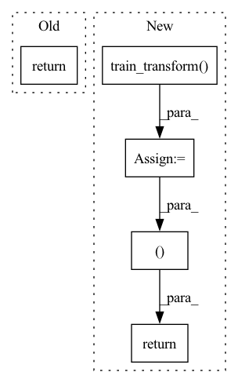

Pattern ID :18330
Before Change
def __call__(self, inp):
out1 = self.train_augmentation(inp)
return out1
class Moco2STL10Transforms:After Change
def __call__(self, inp):
q = self.train_transform(inp)
k = self.train_transform( inp)
return q, k
class Moco2STL10Transforms:
In pattern: SUPERPATTERN
Frequency: 9
Non-data size: 5
Instances Fragment ID: 60000483
Project Name: pytorchlightning/pytorch-lightning-bolts
Commit Name: eae3d38136b8ab0ab6a0b9f8ce1cc8d6c62ab073
Time: 2020-05-22
Author: waf2107@columbia.edu
File Name: pl_bolts/models/self_supervised/moco/transforms.py
M Class Name: Moco2CIFAR10Transforms
N Class Name: Moco2CIFAR10Transforms
M Method Name: __call__(2)
N Method Name: __call__(2)
M Parent Class:
N Parent Class:
M File Name: pl_bolts/models/self_supervised/moco/transforms.py
N File Name: pl_bolts/models/self_supervised/moco/transforms.py
M Start Line: 44
M End Line: 45
N Start Line: 44
N End Line: 46
Before Change
def __call__(self, inp):
out1 = self.train_augmentation(inp)
return out1
class GaussianBlur(object):After Change
def __call__(self, inp):
q = self.train_transform(inp)
k = self.train_transform( inp)
return q, k
class GaussianBlur(object):
Gaussian blur augmentation in SimCLR https://arxiv.org/abs/2002.05709 Fragment ID: 60000481
Project Name: pytorchlightning/lightning-bolts
Commit Name: eae3d38136b8ab0ab6a0b9f8ce1cc8d6c62ab073
Time: 2020-05-22
Author: waf2107@columbia.edu
File Name: pl_bolts/models/self_supervised/moco/transforms.py
M Class Name: Moco2Imagenet128Transforms
N Class Name: Moco2Imagenet128Transforms
M Method Name: __call__(2)
N Method Name: __call__(2)
M Parent Class:
N Parent Class:
M File Name: pl_bolts/models/self_supervised/moco/transforms.py
N File Name: pl_bolts/models/self_supervised/moco/transforms.py
M Start Line: 120
M End Line: 121
N Start Line: 122
N End Line: 124
Before Change
def __call__(self, inp):
out1 = self.train_augmentation(inp)
return out1
class Moco2Imagenet128Transforms:After Change
def __call__(self, inp):
q = self.train_transform(inp)
k = self.train_transform( inp)
return q, k
class Moco2Imagenet128Transforms:
Fragment ID: 60000480
Project Name: pytorchlightning/pytorch-lightning-bolts
Commit Name: eae3d38136b8ab0ab6a0b9f8ce1cc8d6c62ab073
Time: 2020-05-22
Author: waf2107@columbia.edu
File Name: pl_bolts/models/self_supervised/moco/transforms.py
M Class Name: Moco2STL10Transforms
N Class Name: Moco2STL10Transforms
M Method Name: __call__(2)
N Method Name: __call__(2)
M Parent Class:
N Parent Class:
M File Name: pl_bolts/models/self_supervised/moco/transforms.py
N File Name: pl_bolts/models/self_supervised/moco/transforms.py
M Start Line: 82
M End Line: 83
N Start Line: 83
N End Line: 85